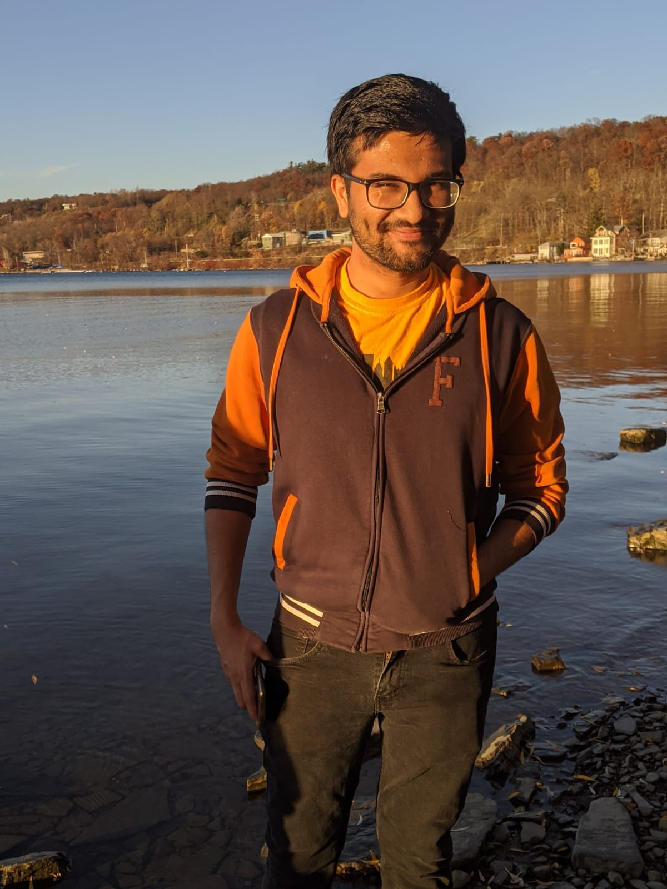
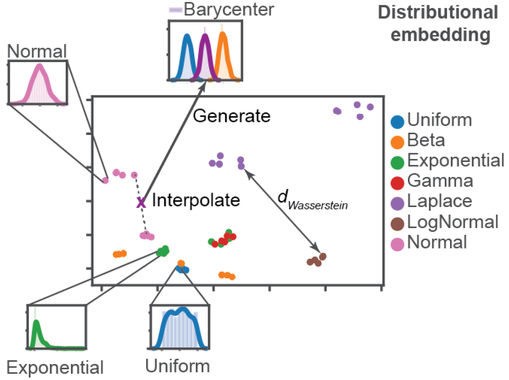
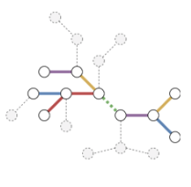
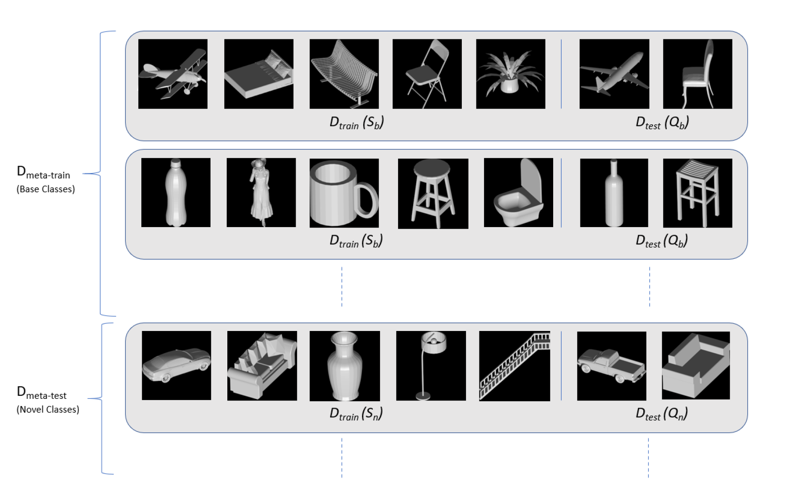
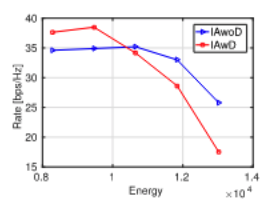

|
Rishabh Gupta
I am currently a research assistant at Yale University working at the intersection of machine learning and biomedicine.
I completed my Masters in Computer Science from UMass Amherst in 2020 focusing on machine learning and AI. Before that, I did my undergrad in Electrical Engineering from IIT Kanpur in 2016 and worked for two years at Samsung R&D Institute Bangalore as a senior software engineer designing acoustic models for ASR team.
During my free time, I love watching / playing cricket or practicing some of my favorite dance moves. You can enjoy some of my past performances here.
Email /
Resume /
Github /
Linkedin /
Twitter
|

|
|
Research
I am broadly interested in everything related to machine learning and AI. Over the past few years, I have worked on a wide range of applications including speech recognition, NLP and computer vision. My recent projects have mainly focused on two important aspects: 1) geometric deep learning (learning with irregular data like sets and graphs) and 2) unsupervised learning or learning with limited supervision. I constantly strive to improve my machine learning knowledge and skills and my goal is to contribute towards solving challenging problems in domains like healthcare and self-driving. Below are some of my recent projects:
|
|

|
Distributional Encoder: A Framework for Learning the Wasserstein space of Probability Measures
Rishabh Gupta,
Yavuz Nuzumlali, Arijit Sehanobish, Neal Ravindra, David van Dijk
under submission
Draft
/
Supplementary
/
Code
Designed a framework to encode distributions in a low dimensional space using set encoders, GANs and optimal transport. Currently in process of applying this method to single cell perturbation data in order to extract new insights by generating samples from interpolations in the encoded space.
|
|

|
Relation Matters in Sampling: A Scalable Multi-Relational Graph Neural Network for Drug-Drug Interaction Prediction
Arthur Feeney*,
Rishabh Gupta*,
Veronika Thost, Rico Angell, Gayathri Chandu, Yash Adhikari, Tengfei Ma
Graph Representation Learning Workshop, ICML 2020
Video
/
arXiv
/
Code
Proposed a relation-dependent graph sampling method for predicting drug-drug interactions using graph neural networks.
|
|

|
Few-Shot Learning for 3D Shape Classification
Rishabh Gupta
Report
/
Code
Studied few-shot learning for 3D shape classification by analyzing multi-view, volumetric and point cloud representations using meta-learning framework.
|
|

|
Improved Rate-Energy Tradeoff for Energy Harvesting Interference Alignment Networks
Rishabh Gupta,
Ajit K. Chaturvedi, Rohit Budhiraja
IEEE Wireless Communication Letters
Paper
Studied optimal resource allocation and transmitter design problem for energy harvesting in interference alignment networks.
|
|
{kind=link}